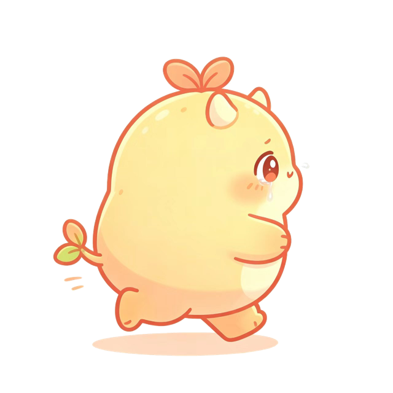

TODAY · 第
137
个背词日
它在桥那头，等你把词夺回来

18
/ 120 词
新词 42 · 旧词 78
继续 · 还剩 102 个词
学习
词表
查词
比赛
我
方案二 · 它守在桥那头（角色即进度）
一条桥面横贯页面：绿色是你已经夺回的词，小馋怪被逼在剩下的那一头（位置 = 还没学的比例），脚下那枚小圆点是你今天出发的地方。
这条桥面就是打哭小馋怪的同一座桥——首页与玩法共用一套世界观，学得越多它退得越远；学满它换姿势哭着跑。
代价：角色与进度绑死，位置要跟着数据动（进度 0 时它贴在最右边）。